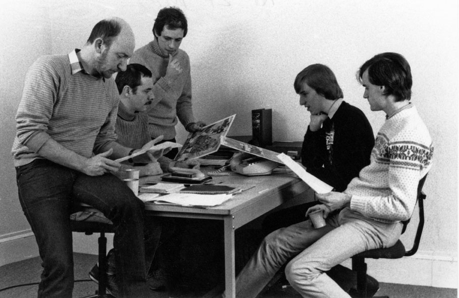
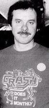
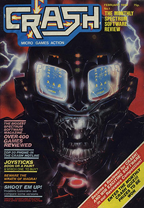
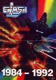

The Pioneers - Roger Kean
Arguably the most important and influential of all the Spectrum magazines was Crash. It was the brain child of Roger Kean and brothers Oliver and Franco Frey. Although the latter two were deeply involved in the magazine, it was Roger Kean, who
as editor and writer, shaped the look and feel of a publication that changed the face and image of the computer industry in the early Eighties.

Since the late Seventies Roger had been involved in book packaging, graphic design and free-lance writing with his partner Oliver Frey, a talented artist. In 1983 Franco Frey came up with the idea of starting a software mail order business, aware that games were difficult to find in the shops. The three of them set up Crash Micro Games Action. A brochure was produced to advertise the games, with Roger writing reviews and Oliver illustrating it.
At an early trade fair, they were encouraged to expand the simple brochure into a full-blown magazine. The idea made sense too. Around this time, the computer press was in the hands of serious-minded folk concerned with schematics and programming, who thought that games were a childish waste of such technology or just an amusing sideline. Those magazines who did make some room for reviews were generally bad at it. And yet the computers themselves were falling into the hands of kids who wanted to know about the new games being released.

The first issue of Crash was planned to coincide with the Christmas 1983 period, but the likes of WH Smith were wary of another computer magazine clogging up their shelf space, so it finally reached the shops on Friday 13th January 1984. The first few issues were mostly written by Roger himself with some help from a group of local school pupils. As Roger said, "that became Crash's strength. We built a reputation for solid reviews by using up to three 'reviewers' drawn from a pool of 15 or so - all at Ludlow School. They were, after all, the target market, and they had a far less sentimental attitude to the games being reviewed than the London-based professionals under the thumb of an advertisement manager.
Crash was written for the kids, but never patronised them, was always honest and generally reliable. Although many younger readers probably only read the playing tips and reviews, there was plenty of serious editorial from Roger Kean that exposed the background manoeuvrings within the industry. He also served as a 'voice of the people', fighting for the welfare of the kids who were putting their pocket money into the coffers of companies who didn't always appear to have their best interests at heart. Furthermore, he championed the industry as a whole, often defending it at a time when the mainstream press were trying to bury it as a dying fad. Most importantly though, Crash demystified the computer scene, ensuring that every reader knew just how good or bad the games in the shops were, as well as making them feel a part of the brave new world of technology.
This latter aspect was a crucial role of the early computer magazines. Before the likes of Crash, games tended to be bought on the recommendation of friends or more likely on the basis of cassette cover blurb. Now here was a magazine that reached out to Spectrum owners across the country, unifying them with a common passion and putting some order into what was an otherwise baffling new medium. Crash became like a friend to its readers too, by personalising the writers - even if its most well-known contributor, Lloyd Mangram, was imaginary. His work was actually that of a number of different writers.
Some of its competitors dismissed Crash as rubbish - a childish comic - but this was sour grapes. After two years of belittling Crash, both Sinclair User and Your Spectrum relaunched themselves as games review magazines, following the lead of the publication they had accused of dumbing down computing. The resentment didn't end there though. Software companies tended to favour Crash because they knew that they were genuinely passionate about home computing, enabling them to publish details of new games without recourse to the sort of botched exclusives that blighted the reputations of other magazines. Indeed, a Crash 'Smash', came to be the most sought after accolade for any new game. Their lofty status did produce a holier-than-thou attitude however, which riled their competitors. This spilt over into petty digs such as the headline, 'Sports Scene - Last Gasp of a Dying Genre', slyly refering to Your Spectrum's owner Sportscene Publications, followed by the outrageous lampooning of Sinclair User as Unclear User.

In mid-1985, Roger handed over the reins of editorship to Graham Kidd and concentrated on the running of sister mag Zzap 64. With the rise of the 16-bit computers, Roger would add The Games Machine to Newsfield's impressive range of titles. Crash, in the meantime, began a steady decline. With the 8-bit market growing obsolete, the magazine became increasingly short on editorial and more concerned with cover tapes and attempting to copy the hip, flip approach of magazines like Your Sinclair - at which they failed dismally.
Towards the end of the decade a series of new titles were launched by Newsfield - LM, Movie, Prepress, CCEG, GMI, Frighteners - although none of them captured the success of their earlier publications. Overstretched and with their computer mags struggling, Newsfield's financial situation hit crisis point. Up to the end they still possessed a frantic optimism, continuing to plan new titles and even take on new staff just weeks before the inevitable collapse. Some late examples of bad judgement sealed their fate and in September 1991 Newsfield folded. What was left was bought by Europress. Crash was merged with Sinclair User for one final copy before both titles were discontinued.
Roger worked for Prima Publishing along with several of his old Newsfield staff until his sad passing from MND in 2022.